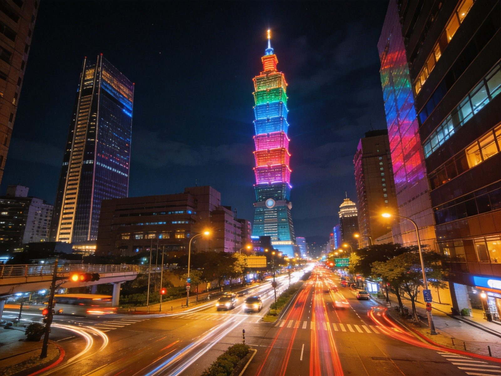
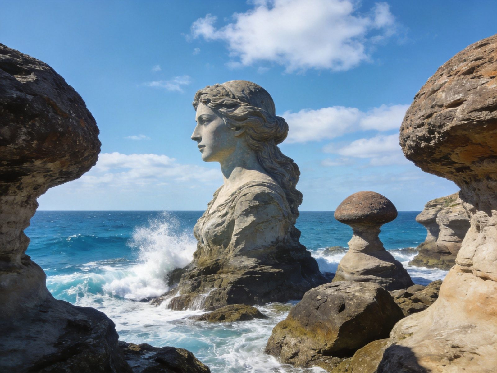
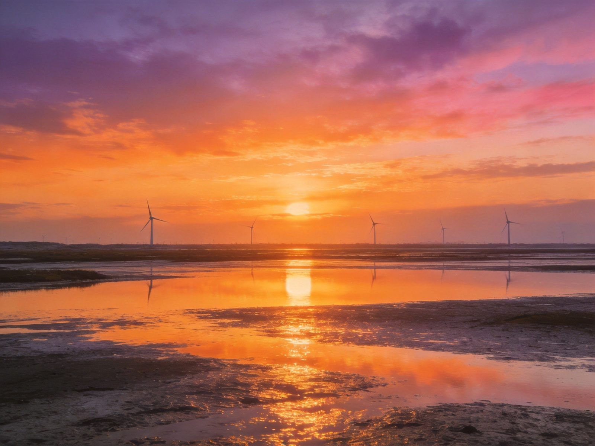
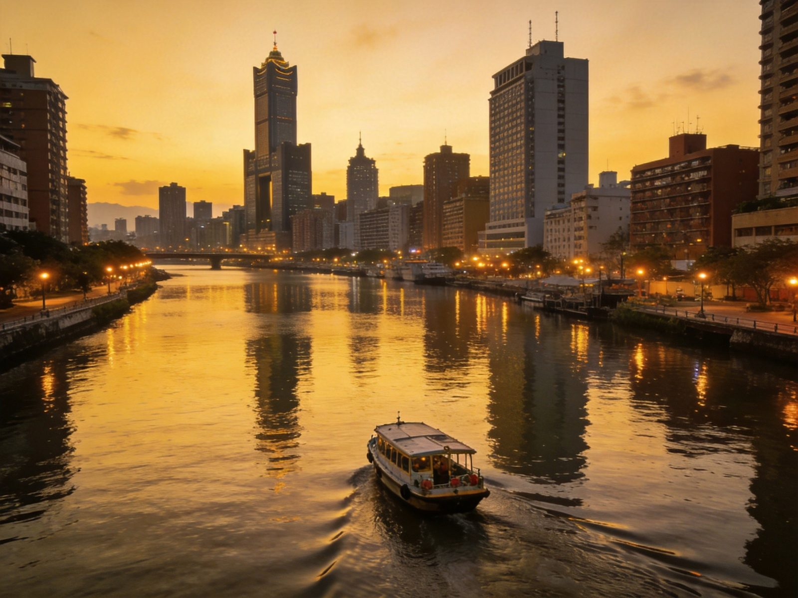
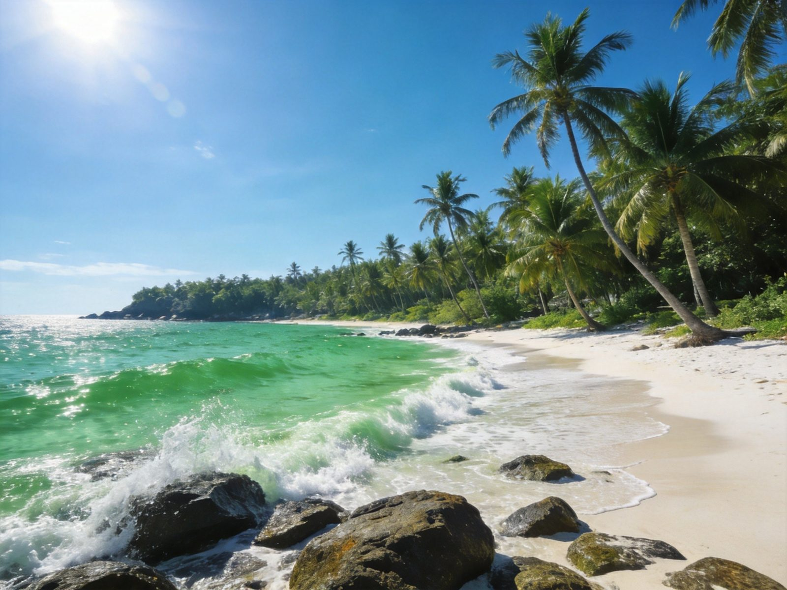
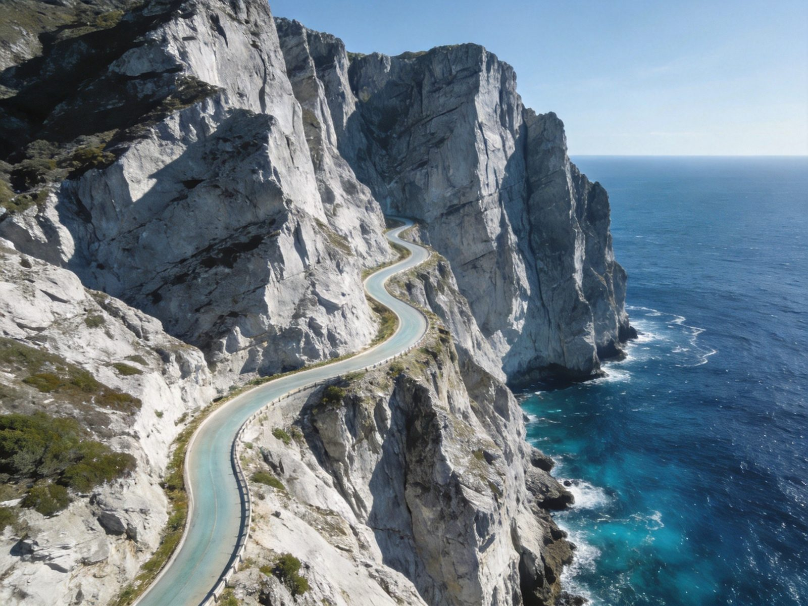
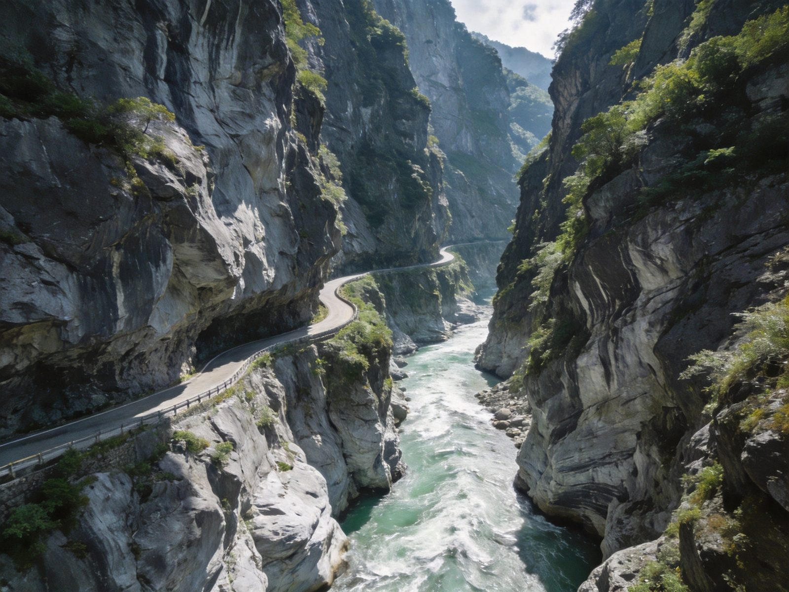
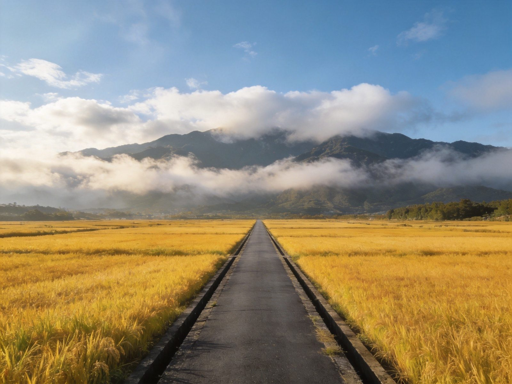
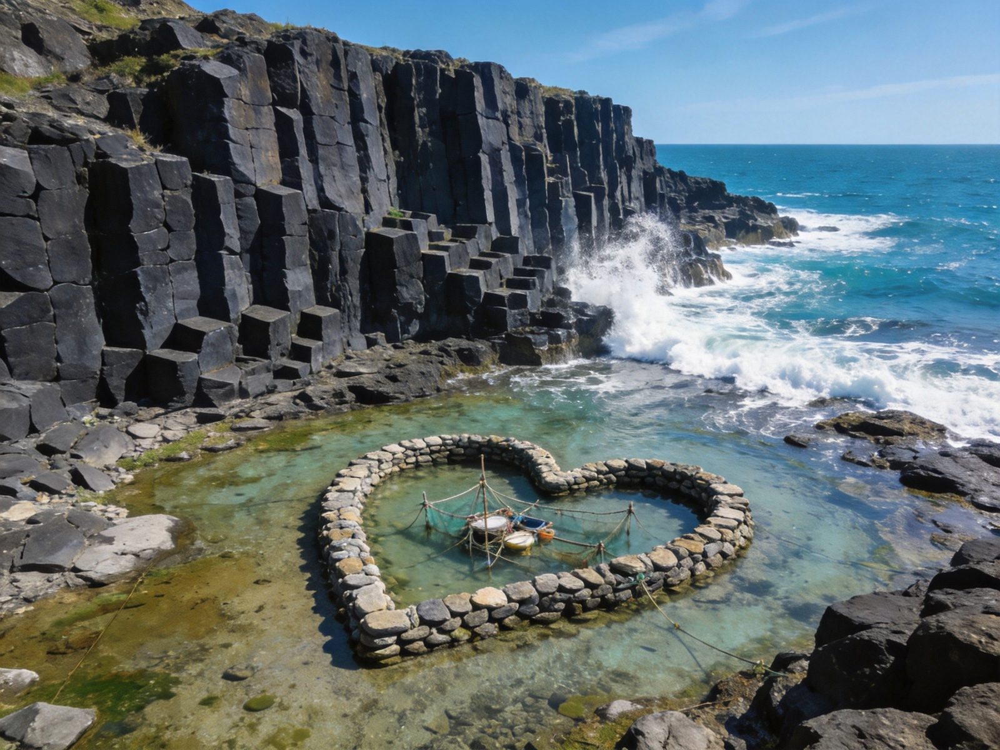
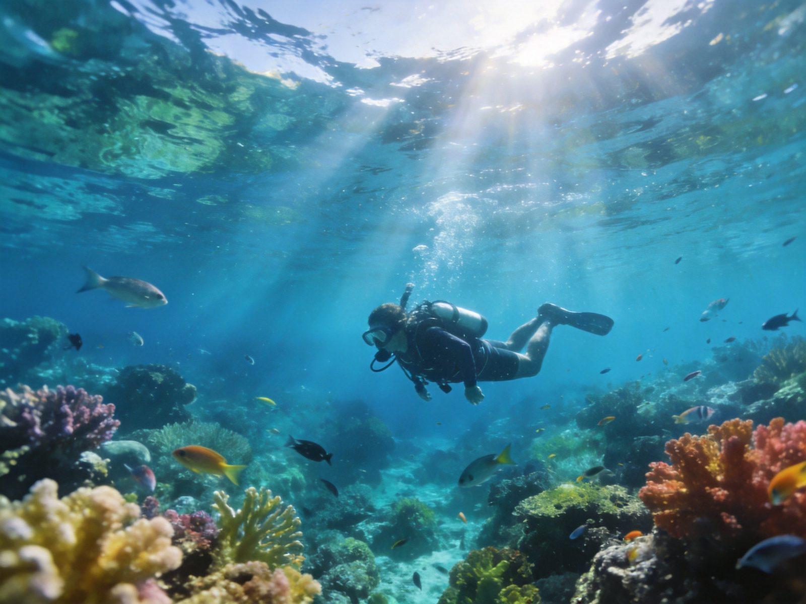

一座 3.6 万平方公里的山海岛屿：北部有都会繁华与山海风光，中部有日月潭与阿里山，南部是港口古城与垦丁海滨，东部以太鲁阁、苏花公路和纵谷田园闻名，外海还有澎湖、绿岛、兰屿等海岛。本篇按北部、中部、南部、东部、海岛度假五大区域，给出玩几天、预算、当地特色与危险点，可落地成行。
| 区域 | 建议天数 | 人均参考（人民币，含交通住宿餐饮门票） | 核心卖点 |
|---|---|---|---|
| 北部 | 3–4 天 | 约 2200–3200 元 | 台北都市、九份山城、野柳海岸、淡水与北投温泉 |
| 中部 | 2–3 天 | 约 1500–2500 元 | 日月潭、阿里山日出铁路、清境农场、台中夜市 |
| 南部 | 3–4 天 | 约 2200–3200 元 | 台南古都美食、高雄港都、垦丁沙滩与鹅銮鼻 |
| 东部 | 4–5 天 | 约 2800–4000 元 | 苏花公路、太鲁阁峡谷、花东纵谷、台东沿海 |
| 海岛度假 | 2–4 天 | 约 1500–3500 元 | 澎湖花火节、绿岛潜水、兰屿离岛风情 |
| 全岛环线 | 10–14 天 | 约 9000–15000 元 | 北中南东 + 选一海岛，环岛深度走透 |
大陆居民赴台需《大陆居民往来台湾通行证》(大通证)+《入台证》。个人自由行入台证目前仅限部分试点城市开放，申请前务必先向出入境部门确认自己户籍符不符合限制，不合规勿轻信代办。
北部多落桃园机场(T1/T2)，南部可落高雄小港机场。大陆直航城市较多，也可经香港/澳门转机。
台湾高铁(台北-高雄约1.5小时)+台铁+捷运+客运畅达；东部花东线靠台铁与公路，包车或租车更自由。高铁非高峰早鸟票约8折。
机场/便利店买预付费SIM卡或租随身WiFi，实用便宜。ATM提现新台币方便，建议备少量现金，夜市小吃多用现金。

台北101观景台、西门町、故宫博物院、中正纪念堂、龙山寺；夜市以宁夏夜市/饶河夜市/士林夜市为代表，卤肉饭、牛肉面、胡椒饼都是必尝。
依山而建的石阶老街与红灯笼、观海茶楼，被誉为《千与千寻》灵感地；相邻的十分放天灯、平溪线小火车很有味道。

野柳地质公园的海蚀「女王头」、蘑菇岩是全球罕见的海岸奇观；沿线还有金山温泉、淡水老街与渔人码头夕阳。
| 北部特色 | 实用提示 / 预算 |
|---|---|
| 夜市饮食文化 | 人均一餐 30–80 元；想吃遍夜市建议多人分食。 |
| 北投温泉 / 阳明山 | 北投温泉个人汤屋约 60–150 元；阳明山春季赏樱花。 |
| 交通 | 捷运四通八达，买「悠游卡」乘车约9折。 |
台湾最大天然湖泊，湖心如日月，玄光寺、慈恩塔、伊达邵部落；可搭游湖船、骑单车环湖。
阿里山森林铁路、神木群、日出云海；祝山观日平台看日出，春天吉野樱漫山。

台中都会旁的高美湿地大片滩涂与风车，夕阳时分倒影绝美；逢甲夜市是台湾知名度最高夜市之一。
| 中部特色 | 实用提示 / 预算 |
|---|---|
| 阿里山火车 | 森林小火车段如祝山线需提前订票，旺季一票难求。 |
| 清境农场 | 高山草原、绵羊秀、猫空山酒吧，适合亲子与慢度假。 |
| 山地交通 | 上山道路弯多，自驾注意安全车距，晕车备药。 |
全台美食之都：棺材板、担仔面、虾仁饭、牛肉汤、虱目鱼粥；赤崁楼、安平古堡、孔庙感受古城底蕴。

爱河、西子湾夕阳、驳二艺术特区、85大楼观景层；六合夜市与瑞丰夜市双选择，是南部交通枢纽。

台湾最南端的恒春半岛：白沙湾、南湾、鹅銮鼻灯塔、龙磐草原、关山日落；潜水与水上活动丰富，是海岛度假与自然风光的结合。
| 南部特色 | 实用提示 / 预算 |
|---|---|
| 垦丁水上活动 | 浮潜约 100–200 元，香蕉船/水上摩托另计；防晒必备。 |
| 台南小吃 | 人均一餐 20–50 元，小吃摊多现金支付。 |
| 交通 | 高雄有捷运+轻轨；垦丁从高雄搭客运约2小时。 |

台湾东海岸最壮美的临海公路，北起宜兰苏澳、南至花莲，约118公里沿海岸而筑。最震撼的「清水断崖」段，峭壁直插湛蓝太平洋，山海同框、名列台湾八景。

由立雾溪切蚀出的大理石峡谷，燕子口、九曲洞、天祥等步道经典，是台湾最具代表性的地质奇观之一。

花东纵谷的池上伯朗大道稻田、鹿野高台热气球、瑞穗牧场；海岸线则有加路兰、三仙台等东海岸景点。
| 东部特色 | 实用提示 / 预算 |
|---|---|
| 花莲·七星潭 | 鹅卵石海滩+太平洋浪，适合傍晚看海。 |
| 交通 | 东部无高铁，台铁(花东线)+包车为主；苏花公路新旧线可选。 |
| 纵谷接驳 | 池上/瑞穗/鹿野景点分散，包车或租自行车更便利。 |

全台最大离岛县，柱状玄武岩、双心石沪、奎壁山地景步道；夏季「澎湖花火节」在海湾放烟花，是海岛度假人气之选。

绿岛以世界级海底珊瑚闻名，朝日温泉、环岛公路骑行；兰屿保留达悟族文化，山海纯净，节奏慢、氛围好。
离台湾本岛最近的珊瑚礁岛，浮潜看海龟、落日亭、乌鬼洞地质景观，半日到一日即可环岛。
| 海岛特色 | 实用提示 / 预算 |
|---|---|
| 南方四岛 | 澎湖、绿岛、兰屿、小琉球各具特色，按行程与船班取舍。 |
| 船班 | 离岛靠船班+飞机(澎湖有机场直飞)，旺季票紧需提前订。 |
| 潜水 | 深浅认证或专人带潜约 300–700 元/次，珊瑚区禁触碰。 |